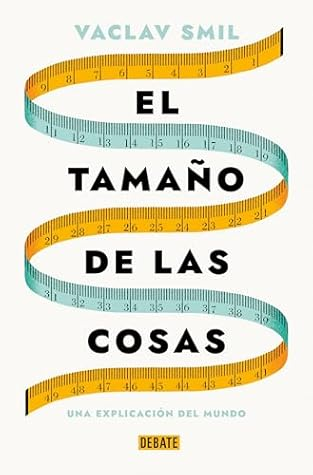

El tamaño de las cosas / Size : How It Explains the World (Spanish Edition)
Reseña por Jorge I. Zuluaga

Ver reseña en GoodReads (necesita cuenta)
No es un libro fácil de leer, como no lo son la mayoría de los libros este autor que están llenos de datos cuantitativos, que tienen a veces un estilo literario más propio de un informe gubernamental e incluso, como sucede por ejemplo en los últimos capítulos de "El tamaño de las cosas" -aunque sin abusar-, en los que no deja de usar algo de matemáticas en la presentación de los temas para desazón de quienes lo compran pensando que son textos de divulgación científica.
Pero repito, no es ese el caso de "El tamaño de las cosas". Este es un libro que se puede leer mientras hace la fila de un banco o viajas en un bus o en un avión.
El libro se divide, a mi parecer, en 4 partes básicas: el tamaño de las cosas (unidades, percepciones, qué es grande y qué es pequeño), las proporciones (simetrías, "razón" aurea, tamaño y belleza), el escalado (la manera como cambian las cosas cuando se hacen grandes o pequeñas, los organos de los animales y plantas, o el poder de las máquinas) y las distribuciones estadísticas (la manera como varían los tamaños siguiendo distribuciones simétricas y asimétricas).
Por mi profesión (soy físico y astrónomo y me dedico, entre otras cosas, a la astrobiología), me encantó el capítulo dedicado al escalado. ¡Datos impresionantes! Me quedo con uno increíble: el poder que producen distintos "motores", naturales y artificiales, escala casi exactamente con su masa. La proporción entre la potencia de un motor a reacción y la masa del motor es casi la misma que la potencia de las alas de un mosquito y la masa de los músculos que las propulsan. ¡Genial!
La parte de las distribuciones también me dejo grandes enseñanzas. Aunque debo confesar que por mi formación técnica y científica fue fácil de leer para mi pero reconozco que puede ser pesada para otras personas.
Una de ellas es la pregunta de si las desigualdades sociales, que son en el fondo distribuciones altamente asimétricas comunes en muchos fenómenos naturales, son precisamente por ello propiedades matemáticas de sistemas complejos (en este caso sociales) que escapan a nuestro control.
Esto huele a argumento técnico para justificar la desigualdad rampante del sistema viciado en el que vivimos (capitalismo financiero); pero también puede verse como un descubrimiento científico que puede soportar la intuición ampliamente difundida de que no es posible aplicar paños de agua tibia para reducir la desigualdad sino que, al contrario, el sistema debe revertirse desde la base para establecer formas de organización que no adolezcan de esta propiedad.
Nada de esto lo discute Smil (no es muy dado a los debates éticos y morales lamentablemente), pero es algo que se derivo de mi lectura de ese último capítulo.
En síntesis: Smil es un autor con libros difíciles de roer. Pero este en particular, vale la pena.